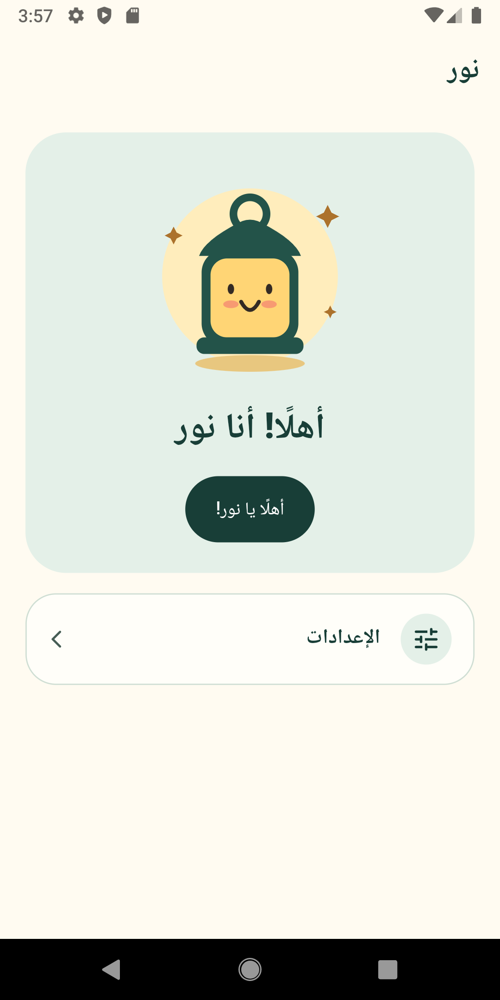
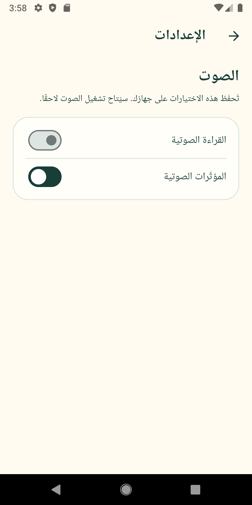
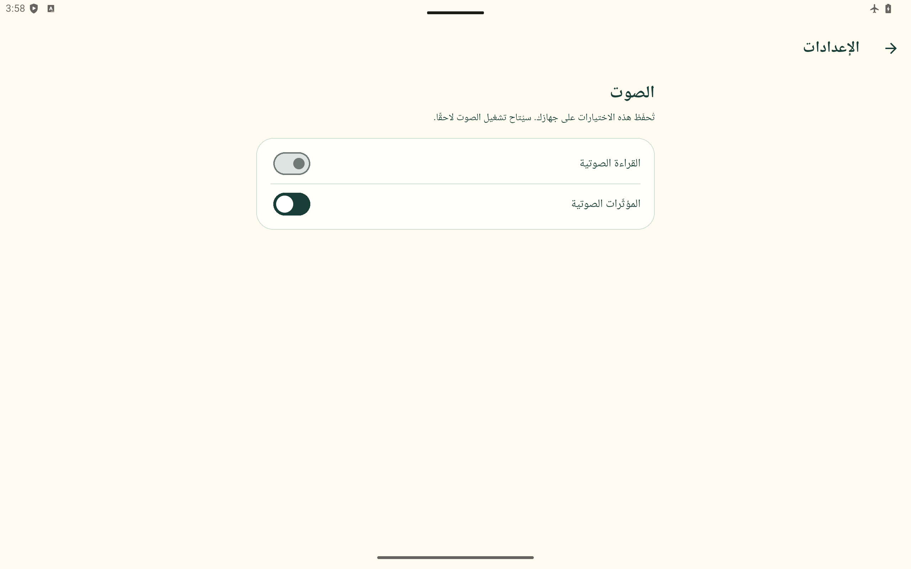

Tablet-first Islamic learning game · SDD roadmap and verified evidence



Generated from progress.json. Completion excludes deferred tasks from the numerator, not denominator. Edit canonical data then regenerate. No remote service required.